# Audiological Testing ### Will Styler - LIGN 113 --- ### Follow-up: On that pesky TM perforation --- ### Now we're heading into the clinical world - "How can we evaluate hearing?" - "How can we characterize different hearing conditions in a numerical way?" - "How can we help people who want to hear better to hear better?" --- ### The first step is audiological testing! --- ### Today's Plan - Pure-tone Audiometry - Speech Audiometry - Otoscopy - Tympanometry - Acoustic Reflex Measurement - Auditory Brain Stem Response --- ## Pure-tone audiometry - Measures the amplitude required to hear a "pure tone" at a variety of frequencies. - Pure tones are simple waves, not complex - "Press the button when you hear a beep" - Can be done with or without masking - This is a *subjective*, behavioral test - *We'll focus on this in our next session!* --- ## Speech Audiometry - Measures the amplitude required to understand speech! - "Repeat each word you say back to me" - Again can be done with or without masking - Also *subjective* and behavioral - *Also in our next session!* --- ## Visual Inspection (Otoscopy) --- ### This is easy, quick and cheap 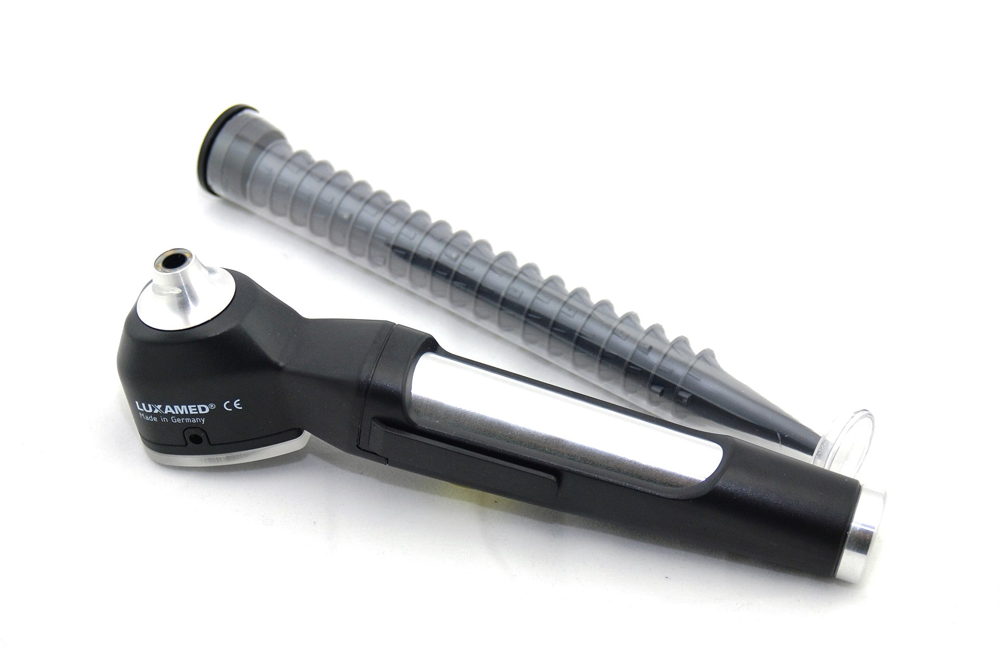 --- ### Let's look inside the ear canal and check for... --- ### A clean, happy ear canal 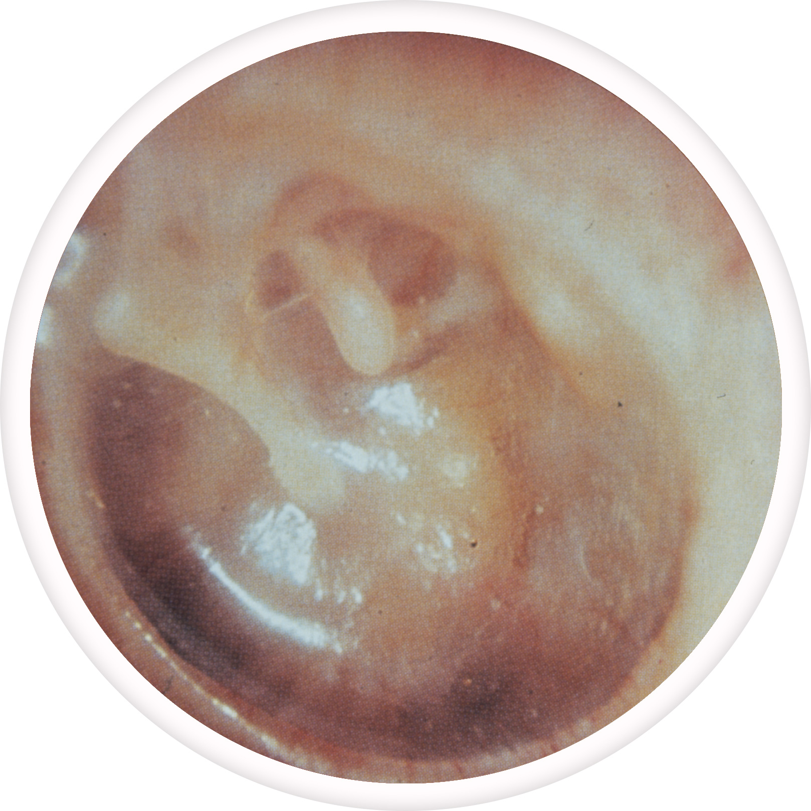 --- ### Otitis Media 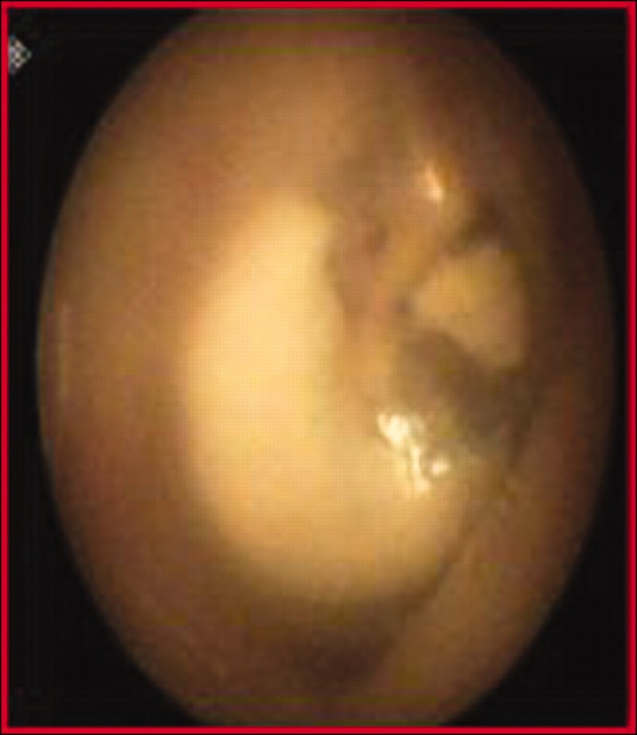 --- ### Built up wax (Go ahead and google that yourself, it's not pretty) --- ### A visible perforation of the TM 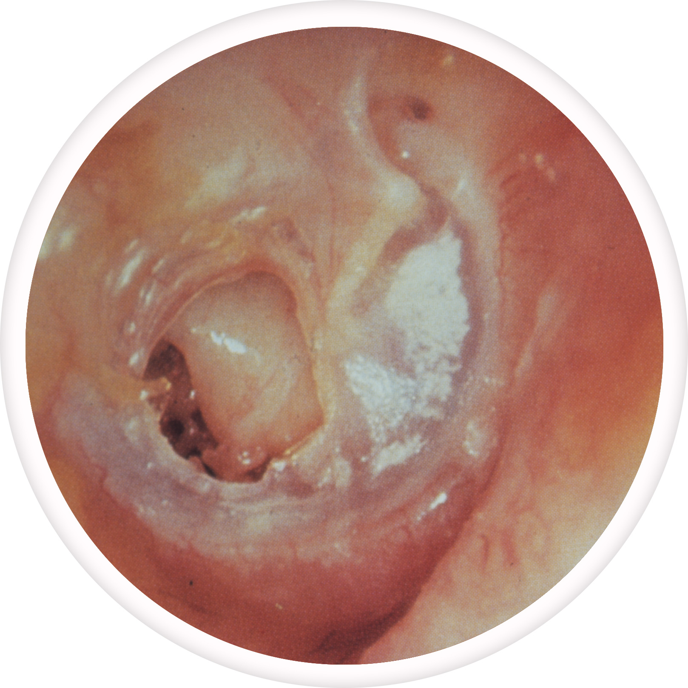 --- ### Tympanostomy Tubes 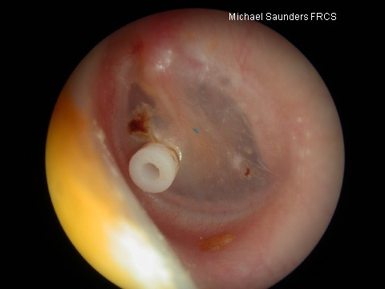 --- ### Effusion (Fluid Build-up) 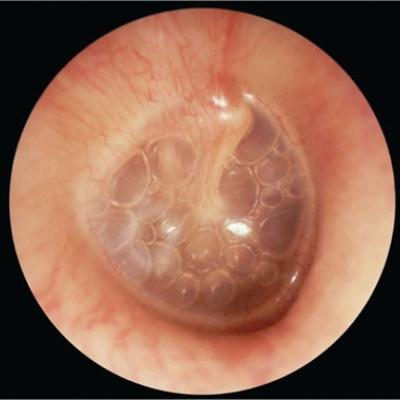 --- ### Cholesteatoma <img class="r-stretch" src="hearing/otoscopy_cholesteatoma.jpg"> --- ### A foreign object - Yep, you can google this one too --- ### What conductive losses would this *not* reveal? --- ## Tympanometry --- ### Tympanometry measures the function of the middle ear - "Is it taking in sound?" - "Is the tympanic membrane moving as expected?" - "Is the pressure inside the ear what we'd expect?" - This is an 'objective' test - It doesn't rely on conscious information from the patient --- ### Tympanometry measures 'admittance' - Admittance is the opposite of impedance - It's measured in 'mhos' (which are the opposite of ohms) 🤣 - "I'm going to play a 226Hz tone at 85dB into the ear, let's see how much is pulled into the middle ear" - Involves simultaneous playback and measurement - We can compare the amount of admittance to known normal values --- ### Admittance Intuition - Misty Golfing --- ### Tympanometry looks at admittance under different pressure levels - We expect the middle ear to absorb energy best at atmospheric pressure - ... and when the pressures are too high or low, for admittance to go down - So, you 'sweep' the pressure while measuring admittance! --- 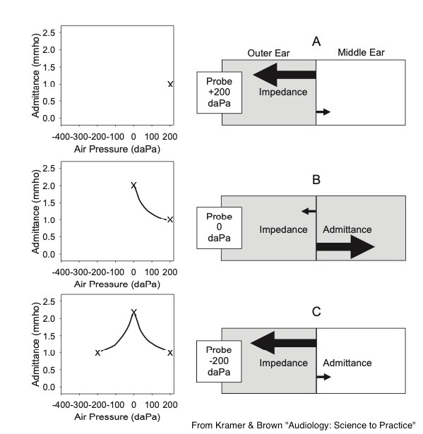 --- ### A 'normal' tympanogram 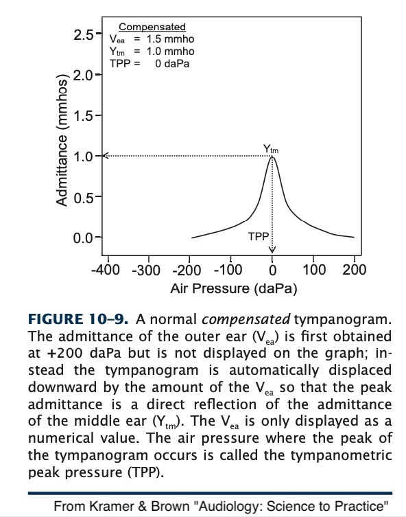 --- ### Tympanograms with troubles 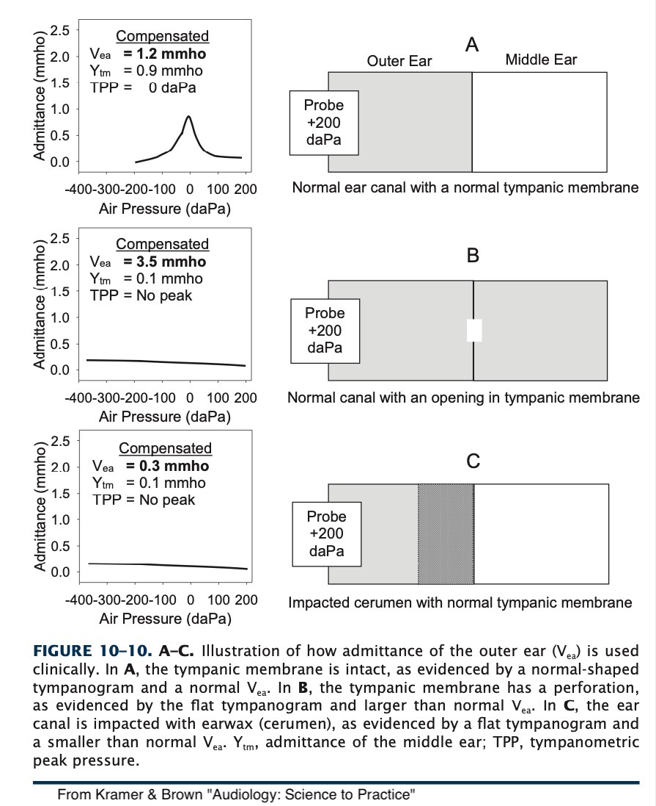 --- ### Reduced Admittance (Type As) - Poor movement of the tympanic membrane! 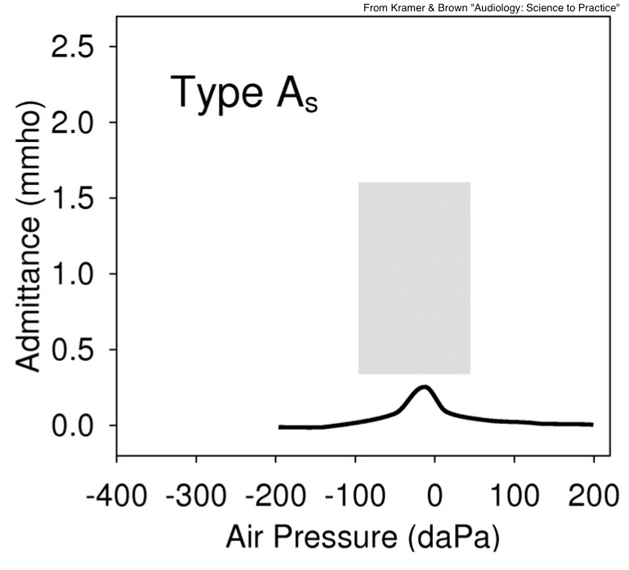 --- ### High Admittance (Type Ad or Add) - Excessively mobile TM (e.g. busted/dislocated ossicles or thinned TM) 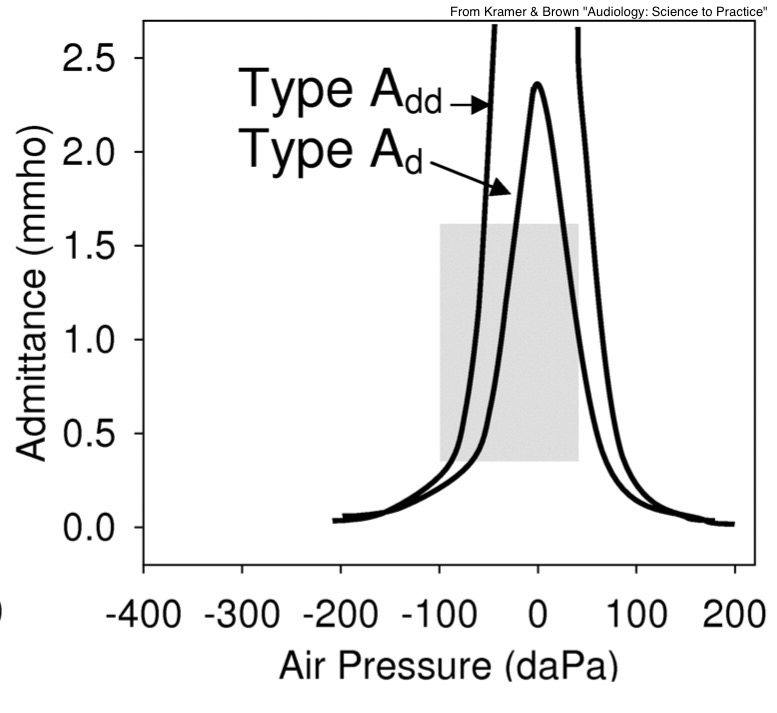 --- ### Flat (Type B) - OM with effusion, perforation, or tubes 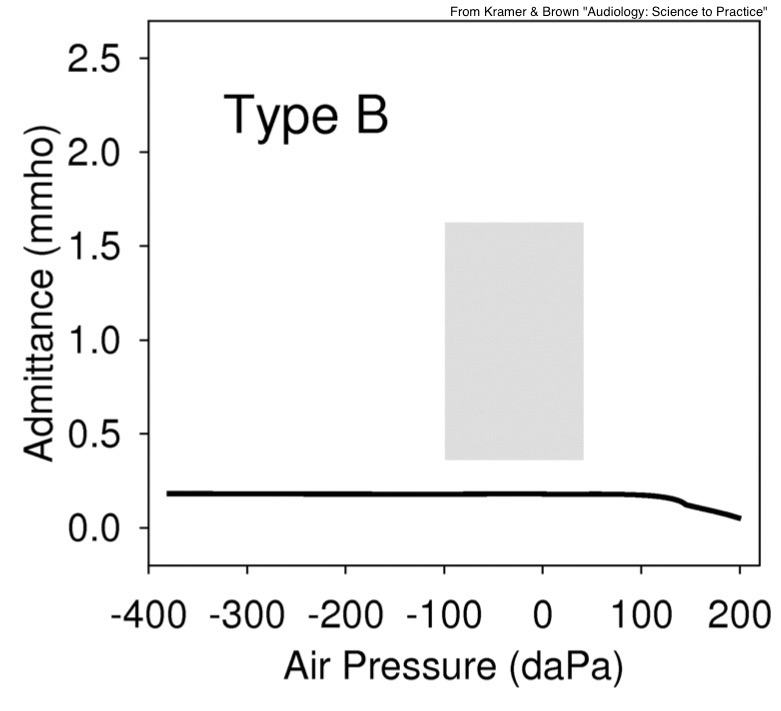 --- ### Negative Pressure (Type C) - Middle ear pressure hasn't equalized, bad eustachian tube! 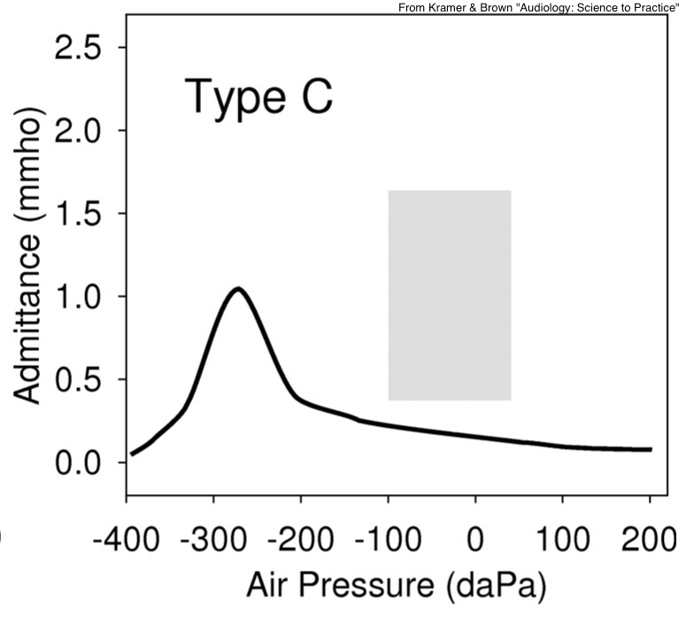 --- ### Tympanograms provide valuable information! - They tell us about middle ear and ossicular function - They tell us about pressure inside the ear - They tell us about TM health - They provide more information for diagnosing hearing trouble! --- ### What does this tell us about sensorineural loss? --- ### These four tests almost always happen! - Otoscopy, Pure-tone Audiometry, Speech Audiometry, and Tympanography - ... but sometimes you need more data! --- ## Acoustic Reflex Measurement --- ### Review <img class="r-stretch" src="hearing/middleear_netter.jpg"> --- <img class="r-stretch" src="hearing/middleear_lateral.jpg"> --- ### We can measure admittance - "How much sound energy is being allowed to pass down the chain" - The acoustic reflex should change the admittance! - Keeping the ossicles from moving as effectively will make them transmit less sound --- ### Acoustic Reflex Measurement triggers the AR on purpose! - Play a series of escalating tones into one ear or the other - Then measure the level at which we see the AR happen! --- 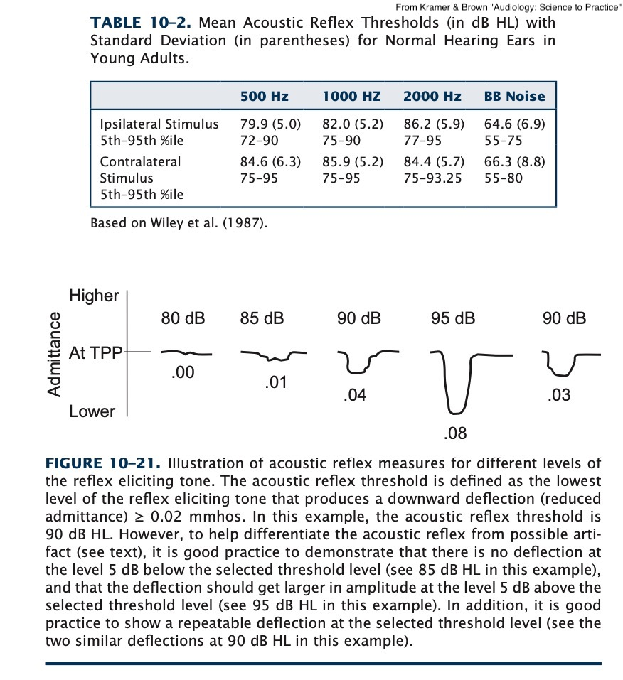 --- ### We can measure both the strength of the AR - We can measure the threshold which triggers it - ... and we can measure same ear (ipsilateral) and opposite ear (contralateral) reflexes! --- 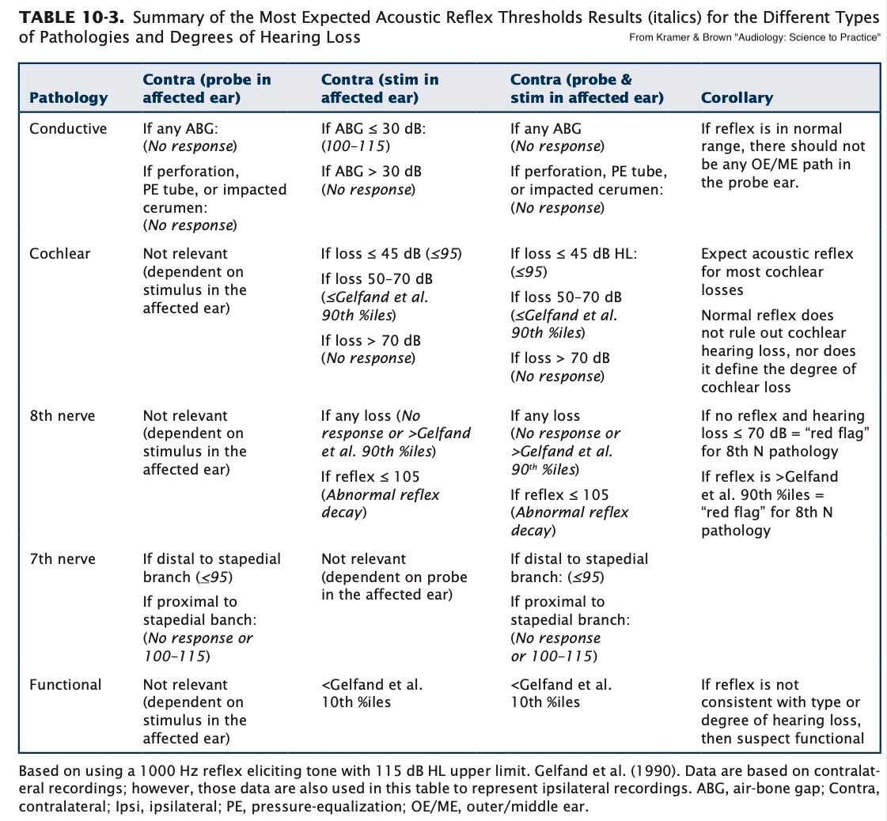 --- ### Acoustic Reflex Measurement provides great diagnostic info! - Helps to distinguish different nerve disorders --- ### There's way more to this than we have time for - Mostly, just realize that it's a thing! --- ## OAEs and ABRs! --- ### Sometimes, you can't rely on cooperation - Children, Infants, Newborns - Potentially non-cooperative adult patients - Worker's Comp and/or Disability fraud cases - ... or the patient has troubles that aren't well captured by other measures - We might want to look for *evoked responses* - Don't ask the patient, just measure their physiological response --- ### Otoacoustic Emissions - We've talked about these already - "Play a sound into the cochlea, and listen for what comes back!" - They help measure the health of the cochlear amplifier - Chapter 11 of your book goes into depth --- ### OAEs have a blind spot! - What could be missing with OAEs still working well? --- ### Auditory Brainstem Response - Sometimes, you suspect there's a nerve problem - Or maybe you can't get *subjective*, behavioral measurements - Children, Infants, Newborns - But you still want more detailed information than OAEs --- ### The idea - Present auditory stimulus repeatedly - Look for evidence of neural activity by measuring scalp potentials - Use signal averaging to isolate the responses which are *time locked* to the stimulus --- ### ABRs by Amplitude 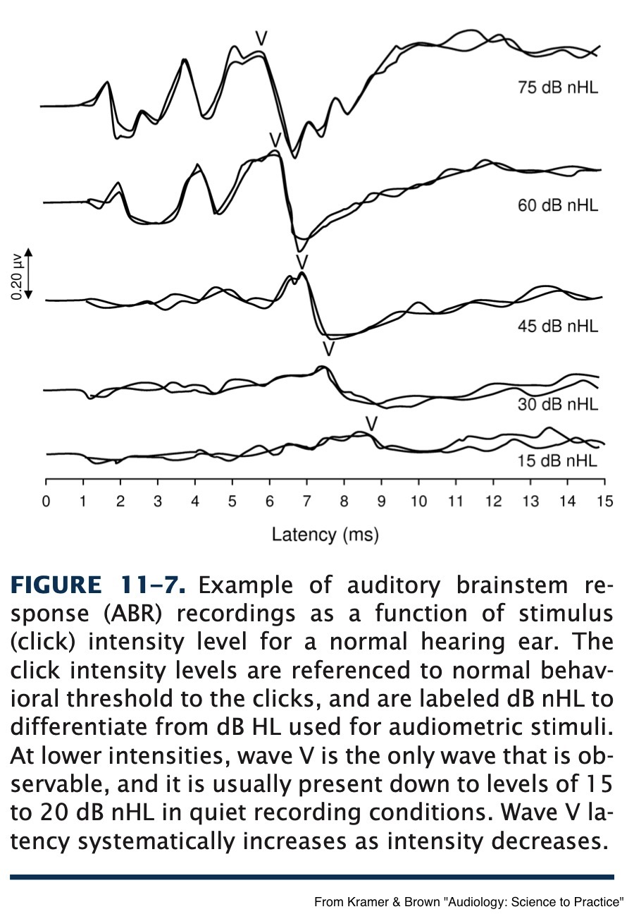 --- ### ABRs by Frequency 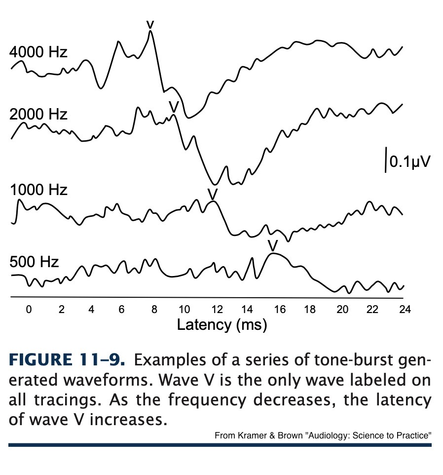 --- ### ABRs can give us lots of information - It can give us thresholds of perception - Audiogram-like data, without cooperation! - It can identify pathologies of the 8th nerve - It's yet another window into hearing function! - **These are covered in more depth in Chapter 11!** --- ### Wrapping Up - Audiological tests provide useful information for diagnosing pathologies - They can give direct information - Otoscopy - They can give us subjective, behavioral information - Audiometry - They can give us objective information about the systems - Tympanography, Auditory Reflex Testing, OAEs and ABRs - They're all awesome! --- <huge>Thank you!</huge>